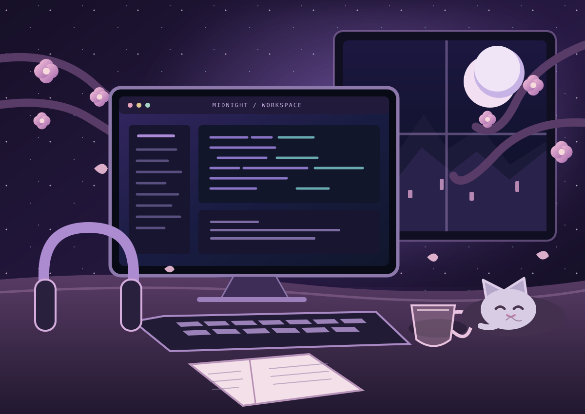
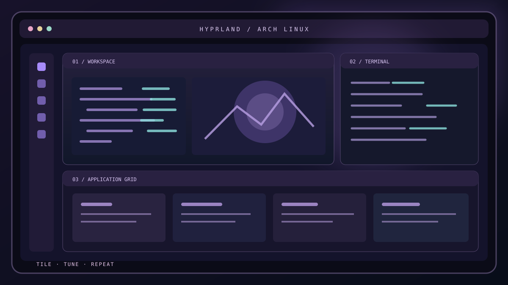
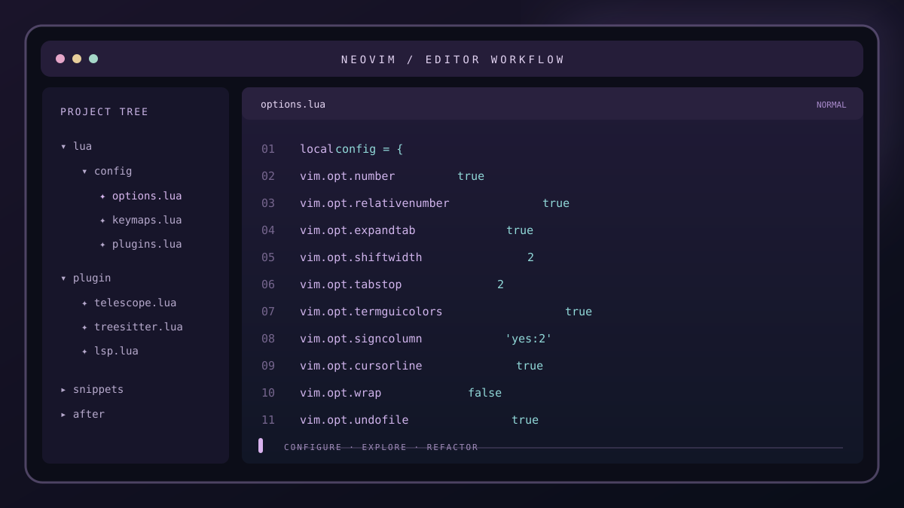
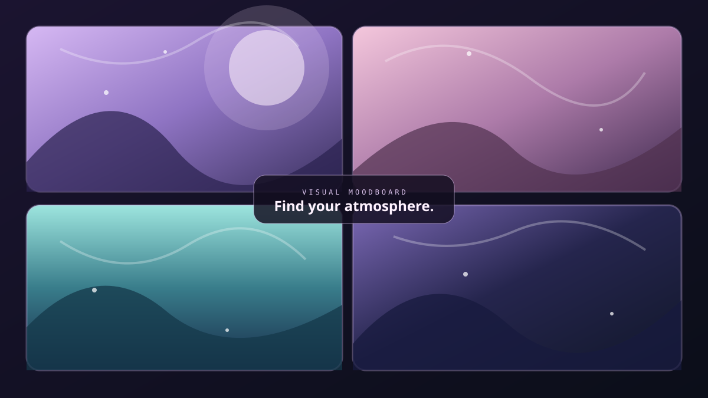

01 / JSON WORKBENCHLOCAL
Format. Validate. Minify.
Make JSON readable, compress it, or catch syntax errors.
OUTPUTWaiting for JSON
Your result will appear here.
HEY, I'M SaOYaD
I’m a computer-engineering learner who figures things out by making them. I build Discord systems, explore Linux, and turn “what if?” into something I can actually use.

SAOYAD / MIDNIGHT SAKURAA cozy corner for curious minds ↓01 THE USEFUL CORNER
Small utilities for everyday coding and focused work. No sign-in, no uploads — everything below runs in your browser.
Make JSON readable, compress it, or catch syntax errors.
Your result will appear here.
Count words and characters, change case, and tidy spacing or blank lines.
Your text stays in this tab.
A simple timer for study sessions, coding, or a proper break.
Ready when you are.
Check text/background pairs against WCAG contrast guidance.
WCAG contrast: 4.5:1 normal text, 3:1 large text, 7:1 enhanced.
✿ Private by design: your input is processed locally and is not uploaded. Refreshing clears the fields.
01 THE BIG BUILD
The project I keep coming back to, learning from, and making better.
STEAMer ACADEMY INFINITY is my main project: a modular Python and discord.py system built around a real study community. It brings learning tools, member progression, community workflows, moderation, and a carefully shaped interface into one place.
I treat it like a product, not a quick script: build a feature, protect what already works, check command consistency, test the change, and keep improving the experience.
*Figures are from the R151 release notes. Offline tests are not a substitute for live checks of Discord sync, permissions, interactions, or voice playback.
Quizzes, flashcards, focus sessions, study tasks, exam countdowns, daily challenges, and weekly quests.
Subject-help threads, suggestions, polls, announcements, support tickets, welcome tools, and roles.
Community XP, achievements, study and voice tracking, helpful recognition, and period-based leaderboards.
AutoMod tools, anti-spam protection, verification, moderation logs, and configurable audit verbosity.
AFK tracking, private missed-mentions inbox, member profiles, music, and mini-games.
Custom embeds, generated profile cards, curated emoji assets, mascot art, and a Midnight Sakura visual system.
02 THE PROJECT SHELF
A few experiments, tools, and side quests from the workshop.
A few things from the workshop.

01 · DESKTOP ENVIRONMENT↗A personal Arch + Hyprland environment with cohesive themes, wallpapers, terminal setup, keybindings, and workflow utilities.

02 · EDITOR WORKFLOW↗A modular Neovim setup with plugins, LSP, Telescope, Treesitter, debugging, Git tools, and a custom dashboard.

03 · VISUAL COLLECTION↗A collection arranged around visual moods: abstract, minimal, nature, space, retro, and vibrant.
A separate Node.js / discord.js bot project. STEAMer ACADEMY INFINITY remains the main Discord bot and flagship build.
Nothing here by that name. Try another search ✿
03 THE WORKBENCH
A few tools I use, customize, and learn from along the way.
04 THE LEARNING LOG
I’m early in the journey, and that’s the fun part. There’s a lot to understand, and every project gives me another reason to go deeper.
Curiosity first. Good fundamentals. No pretending to know it all.
Breaking big features into smaller pieces, keeping data safe, and making interfaces that are genuinely useful.
Getting more comfortable with the browser, interactive interfaces, and how the pieces of a web app fit together.
Exploring the command line, desktop environments, processes, and what happens underneath the interface.
05 A LITTLE ABOUT ME
I’m SaOYaD, a student at the beginning of a computer-engineering journey.
I’m interested in how software, operating systems, and online communities fit together. Most of my learning happens by trying something, finding the parts I don’t understand, and building until it makes sense.
This site is a snapshot of that process: things I’ve made, tools I’m exploring, and projects I’m still improving. The work is allowed to grow as I do.
A little more on GitHub ↗06 A TINY INTERACTIVE CORNER
This mini CLI is just for exploring the portfolio. It never runs commands on your device.
SaOYaD shell · portfolio guide
Hey there ✿ Type help to explore.
A local demo — no real system commands are executed.
07 THE GITHUB PULSE
Checking for recent public activity…
Live public profile data from GitHub. Private activity is not shown.
08 FIND ME AROUND
Have a project to explore, an idea to discuss, or something useful to teach? Come say hello.
Stay curious. Keep creating. ✿